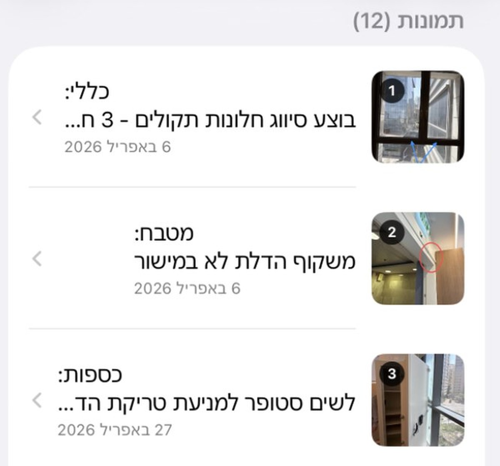
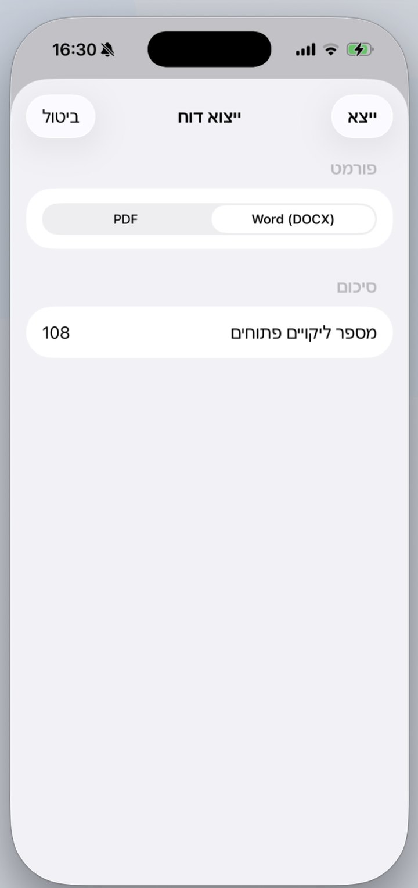

The job
The photos and the findings arrive separately, and get matched up later.
An inspector walks a handover with a phone. Photos land in the camera roll, notes land somewhere else, and the report gets assembled that evening out of both. Everything that goes wrong in this workflow goes wrong in that gap.
So the app has one real job, and it is not photography. Keep the photo and the finding attached from the moment the photo is taken, so there is nothing left to reassemble afterwards.
Capture
Every photo is already a finding.
There is no separate pass where the list gets written. Photograph the defect, mark it, type the line: it is numbered, located and dated as one object, and the numbering is the app's job rather than the inspector's.
Marking matters more than it looks. A photo of a doorway is not evidence. A photo with the frame circled is. The annotation is burned into the thumbnail, so the list stays readable without opening anything.

Report
The report is the product leaving the app.
I could have built a better report viewer. Nobody wanted one. They wanted the file they already send clients: Word while it still needs editing, PDF when it is final.
That is the whole reason the app fits the job. It produces the artifact the workflow already ran on, instead of asking the workflow to change shape around new software.
What it costs: two export pipelines to build and keep working instead of one screen. That is the line between something people demo and something people use.

500
open findings, one real handover
The export does not count photos. It counts what is still open, because a handover list is not finished when the report goes out. It is finished when the items are closed.
It also settles the question every small tool eventually faces: whether it still behaves once the job stops being small.
In use
Still open, months later.
One project, four handover visits between April and June, each carrying its own photo count. A construction inspection company runs real jobs on it.
That is the part worth showing. Not that it shipped: that somebody kept using it after it did.

What changed
Almost nothing about the job, on purpose.
Inspectley did not change how anyone inspects a building. The walk is the same, the judgement is the same, and the client receives the same kind of document they always received.
What moved is where the report gets assembled: on site, by the person who saw the problem, while they are still standing in front of it.
The best thing I built for it was not a screen. It was the file at the end that nobody has to think about.